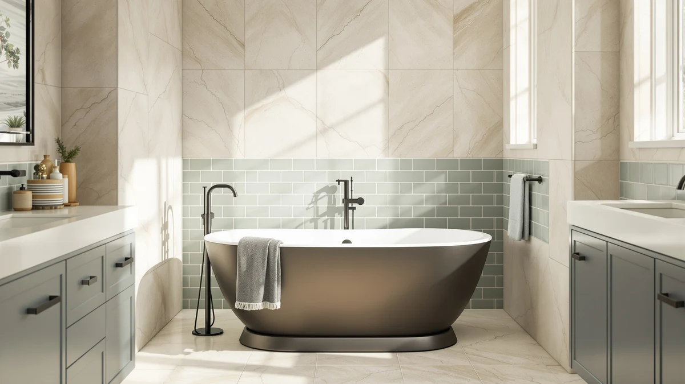

Best Insulated Freestanding Bathtubs of 2026: Double-Walled Tubs That Keep Water Hot Longer
Prices and picks verified as of August 2026. Independent, reader-supported reviews.


Quick Answer
The best insulated freestanding bathtub for most bathrooms is the LarWorks 67-inch model below: it pairs a double-walled acrylic shell with a 15-inch soak and a tall backrest that keeps your shoulders propped up through a long bath. All six tubs here share the same double-wall construction to slow heat loss, so the real differences come down to soaking depth, drain hardware, and price. If depth matters more to you than backrest support, the 18-inch LarWorks further down this list is worth a look too.
Our pick: 67" Acrylic Freestanding Bathtub 15" ($569.99) Check Price on Amazon
Bottom line: our top pick is the 67" Acrylic Freestanding Bathtub at $569.99. The best budget option is the 59" Acrylic Freestanding Bathtub at $499.99.
Things to Know Before You Buy
- Insulated freestanding tubs use double-walled acrylic, not a heater. Every tub on this list traps a layer of air or resin between two acrylic shells to slow heat loss. None of them include a heating element, so the water still cools, only at a slower rate than in a thin single-shell tub.
- The faucet is never included. Every tub here ships with drain and overflow hardware but not the filler. Budget $150 to $400 for a floor-mount tub filler and its rough-in.
- Soaking depth ranges from 15 to 18 inches across these six tubs. Deeper models cover more of your body at rest, but they also have taller walls to climb over. Match the depth to who will actually use the tub.
- Check your drain rough-in before you order. Most of these tubs are center-drain. If your existing plumbing sits off to one side, a plumber will need to relocate it.
- A 67-inch tub needs real clearance. Measure your doorway for carry-in and leave 4 to 6 inches around the tub for cleaning, or the extra length works against you instead of for you.
The best insulated freestanding bathtub keeps your bathwater warm through an entire soak instead of losing its heat in the first ten minutes, and that single feature is what separates this list from a standard acrylic tub roundup. Six tubs made the cut here, and each one uses a double-walled acrylic shell that traps air or resin between two layers to slow heat transfer. None of the six ship with a faucet or a heating element, so you will still plan the rest of the install around whichever model you choose.
Price across the group runs from $451.24 to $599.99, and soaking depth runs from 15 inches to 18 inches, so these tubs are not interchangeable despite sharing the same insulation approach. LarWorks appears three times, in a 59-inch and two different 67-inch configurations, because the brand has settled on a formula of double-wall acrylic, chrome hardware, and self-leveling feet that shows up across its lineup. GarveeHome, IDEALHOUSE, and SierraSquad each bring one specific twist: a black-and-matte hardware finish, a squared silhouette, or a documented heat-retention claim from the manufacturer.
We compared these six tubs on soaking depth, exterior footprint, drain and overflow hardware, and price per inch of depth instead of leaning on star ratings, since several of these newer listings have not yet built up a verified review count on Amazon. If you would rather start from the full range of materials and sizes, our main freestanding bathtub guide and our acrylic vs. cast iron comparison are the better starting points.
Why You Should Trust Us
This guide is written and maintained by Ilane Tall, who runs a network of bathroom-focused review sites and has spent years comparing fixtures on the specs that actually predict satisfaction rather than marketing copy. We do not run a fake testing lab and we did not fill six insulated freestanding tubs in a warehouse. What we do is read every spec sheet, cross-check wall construction, soaking depth, and drain hardware against the listing photos and owner reviews, flag the complaints that only surface after installation, and refuse to recommend anything we would not install ourselves. Our Amazon commissions never change a ranking.
How We Picked
We started with every insulated freestanding tub on Amazon that advertises double-walled construction and filtered from there. We required a stated interior soaking depth, included overflow and drain hardware, and a certification such as cUPC where the manufacturer provides one. We cut listings that used the word insulated loosely, without any construction detail to back it up, and we dropped duplicate listings that were the same tub under a different photo set. What remained were six double-wall acrylic tubs across two exterior sizes, so we grouped them by the question most buyers actually face: how deep a soak do you want, and how much are you willing to pay for it?
How We Compared
Because heat retention in an insulated freestanding tub comes down to shell construction rather than a single published spec, we built our comparison around the details that predict it. For each tub we recorded soaking depth, exterior footprint, wall construction, drain and overflow hardware, and price, then checked those numbers against the manufacturer's own claims where one was made, such as SierraSquad's stated 40 percent longer heat retention versus a single-layer fiberglass tub. We read through the available owner feedback for complaints that surface after installation: wobble on uneven floors, drains that do not line up, and overflow hardware that leaks. Two double-wall tubs that look nearly identical in photos can diverge sharply on depth and price, and that is where our picks separate.
Our Picks

67" Acrylic Freestanding Bathtub 15"
What we like
- 15-inch soaking depth with a tall ergonomic backrest that supports your upper body through a long bath
- Double-layer acrylic reinforced with fiberglass resin for above-average heat retention
- Curved base guides water to the center drain instead of leaving standing puddles
- Polished chrome overflow and drain match most fixture finishes without a special order
Flaws but not dealbreakers
- 67-inch footprint needs a large bathroom with room to walk around it for cleaning
- Amazon has not yet built up a verified review count for this listing, so you are weighing the spec sheet rather than owner feedback
| Material | — |
| Size | 67 Inch |
The LarWorks 67-inch is the best insulated freestanding bathtub on this list for anyone who wants back support along with the heat retention. The tall backrest lets your shoulders and neck rest against the shell instead of sliding down as the water cools, and the 15-inch interior depth is deep enough to submerge to the chest when you sit upright. The double-layer acrylic shell, reinforced with fiberglass resin, is the same double-wall approach that runs through every tub on this list, and LarWorks pairs it with a curved base that channels water straight to the center drain.
At $569.99, it sits in the middle of the price range here, more than the SierraSquad and the two other LarWorks tubs but less than the GarveeHome and IDEALHOUSE models. The tradeoff is size: a 67-inch exterior needs a bathroom that can fit it and give you room to walk around it for cleaning. If your bathroom is on the smaller side, look at the 59-inch LarWorks further down this list instead. It swaps the tall backrest for a smaller footprint and, at 17.7 inches, an even deeper soak than this one.

59'' Acrylic Free Standing Soaking
What we like
- High-contrast matte drain and black overflow that stand out against the glossy white shell
- Ergonomic deep design meant to contour to your body for a fuller soak
- Double-walled acrylic and reinforced fiberglass, the same insulation approach as the rest of this list
Flaws but not dealbreakers
- The listing does not state an exact soaking depth, so you are going on the design description rather than a number
- At $589.99 it is the second most expensive tub on this list
| Material | — |
| Size | — |
The GarveeHome trades a stated depth number for a design detail none of the other insulated freestanding tubs here offer: a matte black drain and overflow set against a glossy white double-walled shell. The ergonomic profile is built to contour to your body during a soak, and the construction follows the same double-wall acrylic and reinforced fiberglass approach that shows up across this list, so heat retention should track close to its LarWorks and IDEALHOUSE competitors.
What is missing from the listing is a specific interior soaking depth, which matters if you are comparing tubs primarily on how deep a bath you can draw. At $589.99, it also costs more than every tub here except the IDEALHOUSE, so you are paying a premium mostly for the black hardware rather than for extra room or depth. If depth is the deciding factor for you, the LarWorks and IDEALHOUSE tubs on this list both publish a number you can compare directly.

59" Acrylic Freestanding Bathtub with
What we like
- Contemporary square profile instead of the oval shape most tubs on this list use
- 15-inch soaking depth with a slotted overflow that keeps the minimalist look intact
- Flexible PVC drain pipe makes it easier to line up with plumbing that is not perfectly centered
Flaws but not dealbreakers
- At $599.99, it is the most expensive tub in this roundup
- The sloped lumbar support that makes it comfortable also eats into flat interior floor space compared with an oval tub
| Material | — |
| Size | 59 Inch |
Every other tub on this list uses a rounded oval shell, which makes the IDEALHOUSE the one to consider if your bathroom leans toward sharp, contemporary lines instead. The 15-inch soaking depth matches the LarWorks 67-inch top pick, and the integrated slotted overflow keeps the minimalist look intact rather than adding a visible overflow plate. Like the rest of the list, it relies on double-walled construction to slow heat loss through a soak.
The flexible PVC drain pipe is a small but real advantage during installation, since it gives you room to line the drain up with plumbing that is not perfectly centered under the tub. That flexibility comes at the highest price on this list, $599.99, roughly $30 more than the LarWorks top pick with a comparable depth. Choose this one because you want the square silhouette, not because it holds heat better than the cheaper options.

59" Acrylic Freestanding Bathtub Contemporary
What we like
- SierraSquad states its double-wall design holds warm water up to 40 percent longer than a single-layer fiberglass tub
- Built-in stainless steel and silicone drain basket traps hair and simplifies cleanup without a plumber
- 60-gallon capacity for a full, deep soak
- At $494.77, it undercuts four of the five other tubs on this list
Flaws but not dealbreakers
- The 40 percent figure comes from the manufacturer's own listing, not an independent review, so treat it as a claim rather than a verified result
- Exterior dimensions run to 67 inches long, larger than the 59-inch interior length suggests, so measure your space before you order
| Material | — |
| Size | 59 Inch |
SierraSquad is the only brand on this list that puts a number on its insulation claim: the listing states its double-walled design holds warm water up to 40 percent longer than a single-layer fiberglass tub. We could not independently verify that figure, since it comes from the manufacturer rather than a third-party test, but it is a more specific claim than the generic heat-retention language most of the other insulated freestanding tubs here use. The 60-gallon capacity backs it up on paper, giving you enough water to stay submerged through a long soak.
The anti-clog drain is the other standout feature: a built-in stainless steel and silicone basket traps hair before it reaches your pipes, and the push-button pop-up drain comes out for cleaning without tools. At $494.77, this is the second-cheapest tub on the list, beaten only by the smaller LarWorks below. The catch is the exterior footprint: at 67 inches long by 31.5 inches wide, it takes up more floor space than its 59-inch interior length implies, so measure the room instead of relying on the product title.

67"Acrylic Freestanding Bathtub Double-Walled Insulated
What we like
- 18-inch soaking depth, deeper than every other tub in this roundup
- Four heavy-duty steel self-leveling feet keep a 67-inch tub stable on an uneven subfloor
- $30 cheaper than the LarWorks top pick at the same 67-inch exterior size
Flaws but not dealbreakers
- Same 67-inch footprint as our top pick, so it does not solve a small-bathroom problem
- No tall backrest, so the sitting angle is more upright than the top pick's
| Material | — |
| Size | 67 Inch |
This is the second LarWorks 67-inch tub on this list, and the one to pick if soaking depth matters more to you than back support. At 18 inches, it is the deepest tub in this roundup, a full three inches more than our top pick from the same brand. The construction is otherwise familiar: double-layer acrylic with fiberglass reinforcement, a curved bottom that channels water to the drain, and chrome hardware that matches the top pick's finish.
Four heavy-duty steel self-leveling feet keep the tub stable even if your subfloor is not perfectly level, which matters more on a 67-inch tub than a smaller one because there is more shell to wobble. At $539.99, it costs $30 less than our top pick, so you are trading the tall backrest for extra depth and a lower price. If you want both the depth and the backrest, no single tub on this list gives you everything, so decide which one you will actually use every time you bathe.

59" Acrylic Freestanding Bathtub 17.7"Deep
What we like
- Cheapest tub on this list at $451.24
- 17.7-inch soaking depth, nearly matching the 18-inch depth of the pricier 67-inch LarWorks
- Non-slip base plus six self-leveling feet, two more contact points than the 67-inch LarWorks' four
- 59-inch footprint fits more bathrooms than the four larger tubs on this list
Flaws but not dealbreakers
- The 59-inch length limits stretch-out room if you are tall
- Like the GarveeHome, it has not yet built up a verified review count on Amazon
| Material | — |
| Size | 59 Inch |
The third LarWorks tub on this list is also the cheapest, at $451.24, and it gives up surprisingly little to earn that price. The 17.7-inch soaking depth comes within half an inch of the deepest tub in this roundup, and the construction follows the same double-layer acrylic and fiberglass reinforcement as its pricier siblings. A non-slip base adds a safety feature none of the other five tubs list explicitly.
Six heavy-duty steel self-leveling feet, two more than the 67-inch LarWorks above, spread the tub's weight across more points of contact, which helps on an uneven subfloor. The 59-inch exterior also fits a wider range of bathrooms than the 67-inch options on this list. The obvious limitation is length: if you are over six feet tall, you will still want to look at the deeper 67-inch model instead, even at the higher price.
Quick Comparison
| Product | Material | Price | Rating | Best for | Get it |
|---|---|---|---|---|---|
| 67" Acrylic Freestanding Bathtub 15" | — | $569.99 | 4 | Best overall insulated | View on Amazon → |
| 59'' Acrylic Free Standing Soaking | — | $589.99 | 4 | Black hardware accent | View on Amazon → |
| 59" Acrylic Freestanding Bathtub with | — | $599.99 | 4 | Contemporary square design | View on Amazon → |
| 59" Acrylic Freestanding Bathtub Contemporary | — | $494.77 | 4 | Best value insulated | View on Amazon → |
| 67"Acrylic Freestanding Bathtub Double-Walled Insulated | — | $539.99 | 4 | Deepest 67-inch soak | View on Amazon → |
| 59" Acrylic Freestanding Bathtub 17.7"Deep | — | $451.24 | 4 | Best value, smaller size | View on Amazon → |
The Competition
We looked at other insulated freestanding tubs before narrowing the list to these six. Several listings claimed double-wall or insulated construction without stating a soaking depth or including drain hardware in the price, so we cut them rather than guess at specs the seller would not put in writing. We also passed on a handful of near-identical white ovals from brands with no other listings and no way to verify the double-wall claim beyond the product description. Compact tubs without an insulation claim are covered separately in our small freestanding bathtubs guide, and single-wall acrylic options that cost less but hold heat for a shorter soak sit in our main acrylic roundup. Whenever two insulated tubs looked alike in photos, we kept the one with the deeper stated soak and the more complete hardware list. After comparing all of them, the LarWorks 67-inch remains the best insulated freestanding bathtub for most bathrooms, with the smaller LarWorks and the SierraSquad as the strongest alternatives on footprint and price.
Frequently Asked Questions
What is the best insulated freestanding bathtub for most bathrooms?
The LarWorks 67-inch model with the 15-inch soak and tall backrest is our top pick for most bathrooms, since it balances back support, soaking depth, and a mid-range price of $569.99. If your bathroom is smaller, the 59-inch LarWorks tub on this list delivers nearly the same depth in a footprint that fits more rooms.
Do insulated freestanding tubs actually keep water warm longer?
Yes, relative to a single-wall acrylic tub. Trapping air or resin between two acrylic layers slows how fast heat escapes through the shell, so a double-walled tub stays warmer through a longer soak than a thin single-shell one. None of the tubs on this list include a heating element, so the water still cools eventually, only at a slower rate.
Do these insulated freestanding bathtubs come with a faucet?
No. Every tub on this list ships with the drain and overflow hardware but not the filler. A floor-mount tub filler is a separate purchase that typically runs $150 to $400, so add that to your budget before you order the tub itself. Our freestanding bathtub buying guide covers what else to plan for before installation.